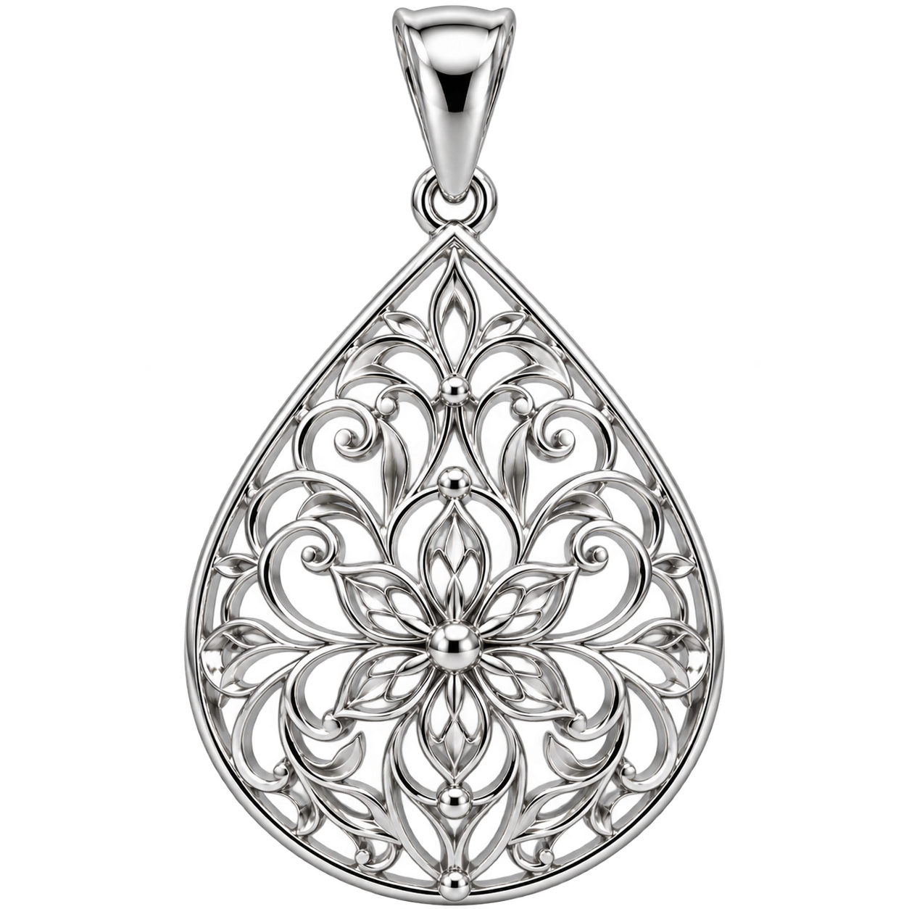
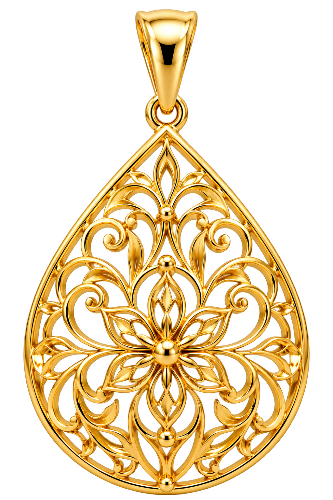

Servizi di additive manufacturing per l'industria del lusso
We print your ideas
Dall'esperienza di Legor nasce il 3D Metal Hub: un centro per sperimentare e produrre componenti in metalli preziosi e non, con la tecnologia 3D Metal Binder Jet.
Guarda come nasce un anelloLegor, la scienza dei metalli preziosi
Fondata in Italia nel 1979 e con sede a Vicenza, Legor produce leghe, polveri e soluzioni galvaniche per i settori della gioielleria e della moda. Ogni anno consolida un percorso fatto di ricerca e attenzione alla sostenibilità, che parte dall'uso di materiali riciclati.
Il 3D Metal Hub, a Bressanvido, è il centro di eccellenza dedicato all'additive manufacturing per il lusso. Legor è stata la prima azienda a portare la tecnologia Binder Jet nel mondo dell'oreficeria e degli accessori fashion, in collaborazione con HP e il suo sistema Metal Jet.
Cos'è la stampa 3D dei metalli
Un oggetto si costruisce a strati, partendo da un modello digitale e da una polvere metallica finissima. È un'alternativa alla microfusione classica: non servono cere o resine da bruciare, né gesso.
- Nessuno stampo. Il disegno si modifica quando serve.
- Campioni rapidi. Si passa dal file al pezzo in pochi giorni.
- Più pezzi in un ciclo. Anche diversi tra loro.
- Zero scarti. La polvere avanzata si riutilizza.
- Catene e parti cave. Senza saldature.
- Nessun supporto durante la stampa.
Si parte da una polvere.
Granelli di metallo tra 5 e 25 micron: più fini di un capello. Scorri per vederli diventare un gioiello.
Stampa
Un rullo stende uno strato di polvere e le testine applicano il legante solo dove serve, seguendo le sezioni del modello. Lo strato si ripete fino all'altezza finale.
Curing
A circa 150 °C il legante si attiva e nascono gli oggetti "verdi": ancora fragili, immersi nel letto di polvere. Poi vengono liberati e puliti.
Sinterizzazione
Nel forno il legante evapora, le particelle si fondono tra loro e il pezzo si ritira. Il raffreddamento è controllato per evitare tensioni e cricche.
Il gioiello è pronto.
Il materiale standard è l'acciaio inox AISI 316L. Prova gli altri metalli su cui lavora Legor.
Si parte da una polvere.
Granelli di metallo tra 5 e 25 micron: più fini di un capello. Scorri per vederli diventare un gioiello.
Stampa
Un rullo stende uno strato di polvere e le testine applicano il legante solo dove serve, seguendo le sezioni del modello. Lo strato si ripete fino all'altezza finale.
Curing
A circa 150 °C il legante si attiva e nascono gli oggetti "verdi": ancora fragili, immersi nel letto di polvere. Poi vengono liberati e puliti.
Sinterizzazione
Nel forno il legante evapora, le particelle si fondono tra loro e il pezzo si ritira. Il raffreddamento è controllato per evitare tensioni e cricche.
Il gioiello è pronto.
Il materiale standard è l'acciaio inox AISI 316L. Prova gli altri metalli su cui lavora Legor.
Layer by layer
Built one layer
at a time.
Nel Binder Jetting ogni componente nasce attraverso la deposizione progressiva di sottilissimi strati di materiale.
Material exploration
One component.
Different metals.
Seleziona un materiale in orbita e osserva come cambia la superficie del pendente.
Metal powder
It starts
with matter.
La polvere metallica rappresenta il punto di partenza per una geometria leggera, aperta e strutturalmente sofisticata.
Produzione in serie
Un pendente,
moltiplicato.
Interactive object
Move around
the object.
Muovi il mouse per osservare il pendente da diverse angolazioni.

Surface finishing
From raw metal
to final finish.
Trascina sull'oggetto per passare dalla superficie appena prodotta alla finitura lucidata.

Richiedi informazioni sul 3D Metal Hub
Racconta il tuo progetto: ti risponderemo con tempi e materiali possibili. (Qui va inserito il modulo o l'indirizzo email reale.)
Scrivici